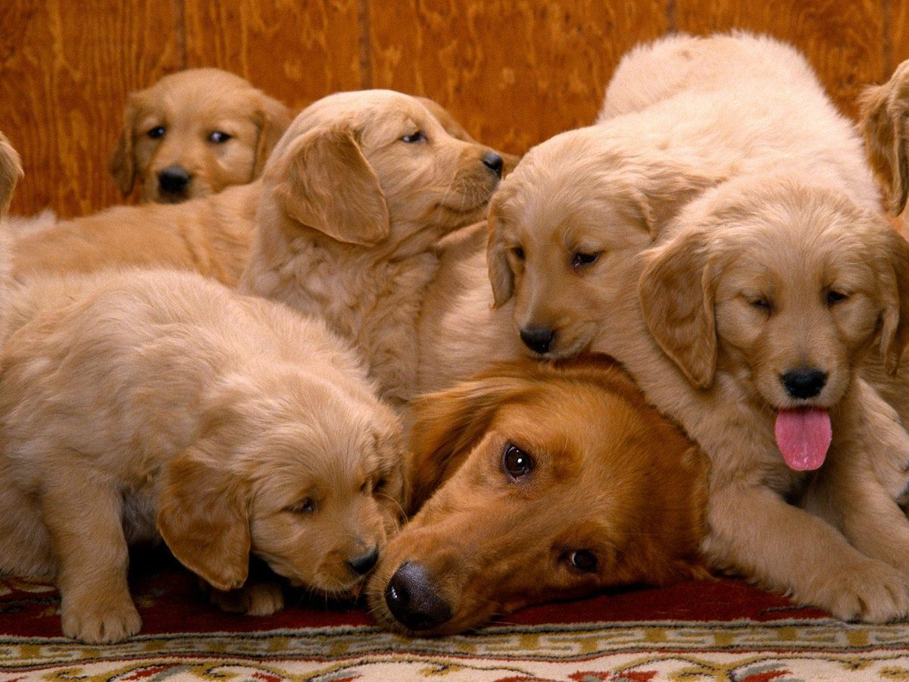

>
Animals!!!
Animals are categorized into two:
- Domestic Animals
- Wild Animals
Domestic Animals
These are animals that have been tamed and kept by humans as a work animal,food source,or pet.They include:
- Donkey
- Cat
- Sheep
- Dogs
- Goats
Now,let's take a look at some domesticated animals
- Dogs
Domestic dogs are mostly kept as pets,through many breeds are capable of surviving on their own, whether it's in a forest or on city streets.

- cats
Domestic cats are characterized by supple low-slung bodies,finely molded heads,long tails that aid in balance,and specialized teeth and claws that adapt them admirably to a life of active hunting.

- Sheep
Sheep or domestic sheep(ovis aries)are domesticated,ruminant mammals typically kept as livestock.

Wild Animals
These are mammals ,birds,fish,or other creature of a wild nature endowed with sensation and the power ofvoluntary motion..Examples of wild animals are:
- Lions
- Hyena
- Elephant
- zebra
- Lions
The lion is a large cat of the genus panthera .It has a muscular,broad-chested body,short,rounded head,round ears, and hairy tuft at the end of the tail.

- Hyena
There are three hyena species-spotted,brown and striped..Spotted hyenas are the largest of the three.They are fairly large in build and have relatively short torsos with lower hindquarters,and sloping backs.They have excellent night-time vision and hearing.Hyenas have long forelegs and a powerful neck and shoulders for dismembering and carrying prey.

- Cheetah
A cheetah is a large cat and native to Africa and central Iran.It is the fastest land animal,estimated to be capable of running at 80 to 128km/h.
cheetah's are fantastic

s